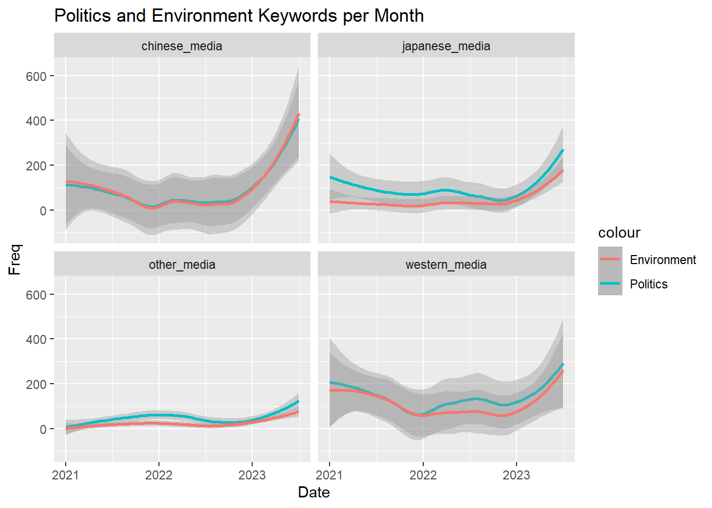
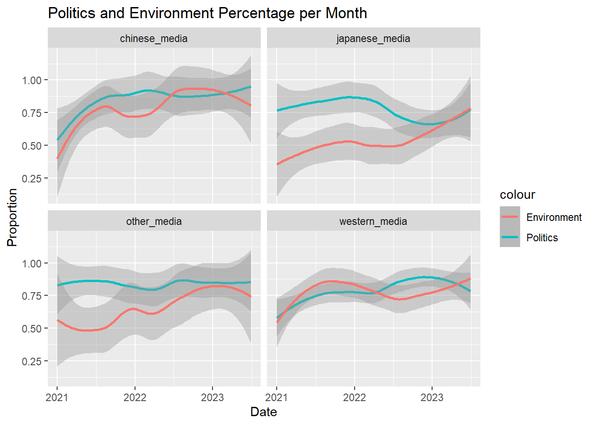
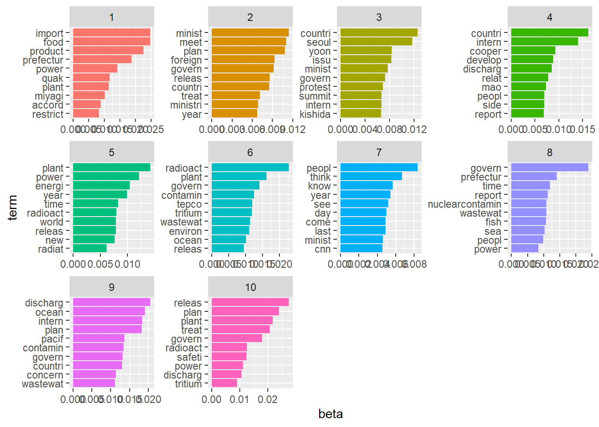

Media Analysis: Representation of the Fukushima Water Incident
July 2023
Japan's recently announced plans to release treated wastewater from its Fukushima Nuclear Plant back to the ocean has created controversy globally. In this project, I produced preliminary findings on how Western, Chinese, and Japanese news sources differed in their representations of the incident.
After collecting news articles in Lexis-Nexis, I created a program in Python to scrape each of the articles to collect the article's title, media source, date, text, and keywords and to write this data into a CSV file. The media sources were sorted into four categories: Chinese media, Japanese media, Western media, and other media. Next, I created vizualizations of the data to answer the following questions:
-
Per month, how frequently were media sources covering the Fukushima water incident?

-
How frequently were media sources discussing the environment or politics when covering the Fukushima water incident?
 -
What proportion of articles covering the Fukushima water incident discussed the environment or politics?
 -
Using unsupervised machine learning, what topics were frequently mentioned together?
